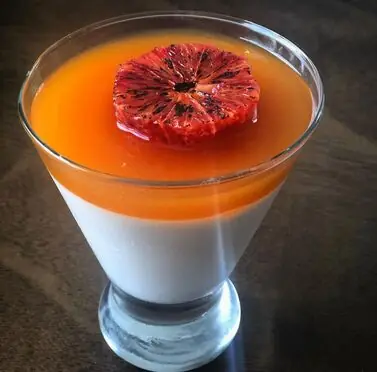

Vanilla Panna Cotta and Passion Fruit Gelee
- Ingredients9
- Steps12

Ingredients
Vanilla Panna Cotta
- 1 cup heavy cream
- 1 cup buttermilk (or whole milk)
- 1/3 cup granulated sugar
- 2 tsp granulated gelatin
- 1/4 tsp salt
- 1.5 tsp vanilla (feel free to add a vanilla bean pod to the mix!)
Passionfruit Gelee
- 1 cup of Passion Fruit puree (or any puree or juice of your choice!)
- Juice of 1 lime, strained
- 3/4 tsp gelatin
Directions
For the panna cotta
- Pour the heavy cream into a small saucepan. Before you turn on the heat, you will bloom the gelatin by sprinkling it over the heavy cream. Allow the mixture to sit 5 minutes.
- Then you will turn your stove on to medium heat and allow the heavy cream and gelatin to heat through while whisking until the gelatin is fully dissolved. Be careful not to boil the mixture as it is unnecessary and can quickly boil over creating a big mess if you're not careful.
- Then add the salt, sugar and vanilla and continue whisking until fully dissolved.
- Remove from heat and strain mixture into a bowl to cool.
- Add the cool buttermilk to help drop the temperature and mix until well combined.
- Allow your mixture to cool to about 100F before pouring into desired serving containers.*
- Cover with plastic and cool in the fridge. Your dessert should be set in 4-6 hours but you can easily cool overnight. Once your dessert is set then we can start round 2! The Gelee..
For the gelee
- Like before, you will bloom the gelatin in the cool juice for 5 minutes.
- Gently heat the mixture through and whisk until well combined.
- Add the lime juice and taste. If the mixture is too sweet for your taste, add more lime juice. If it is too tart, add some sugar.
- Strain and cool your mixture to 100F and pour over your set Panna Cotta. Cover your finished product with plastic and allow to cool and set for another 4-6 hours.
- Finish your dessert with a fresh fruit garnish and you're ready to enjoy!
Recipe credit: chefmonacooks.com